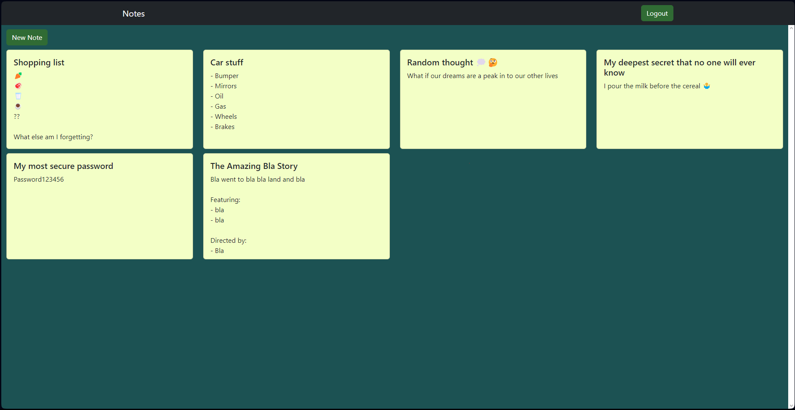

Notes App
Technology used
Front end:
- React
- react-bootstrap
Back end:
- MongoDB
- Node.js
- Express
- Mongoose
Try It 👇
Go to the website here and login with the following demo account or create your own:
After clicking login give it about 50 seconds for the backend server to spin up.Username: Demo
Password: 123456
Description
This project's front end is a single-page application built on React, utilizing Bootstrap to ensure compatibility with mobile screens. The backend is a REST API built on Node.js with Express. It features a basic authentication system and CRUD operation endpoints, which are consumed by the client. The backend utilizes the Mongoose library to connect to and execute queries on a database hosted on a MongoDB Atlas cluster.
Github 